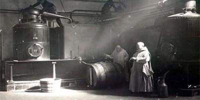
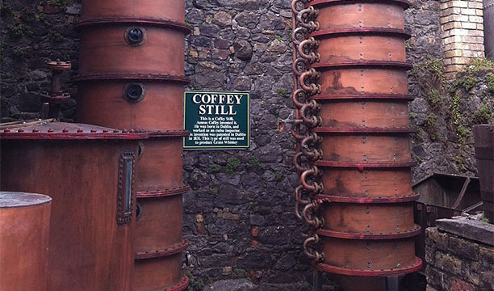
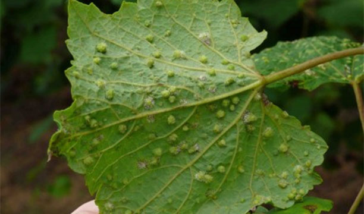
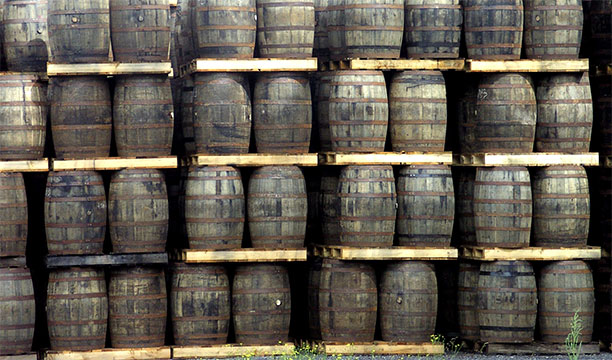
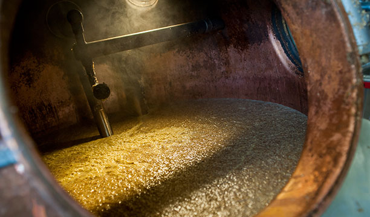

Monks bring perfumery production skills to Ireland in 1000 AD. The technique was modified to create whiskey. The Old Bushmills Distillery is registered in 1784, although landowner Sir Thomas Philips was given a license to distil back in 1608. Bushmill’s claims it is the oldest operational distillery in Ireland.
In 1830 Aeneas Coffey designed the column still. Up until that time all Irish whiskey was made in pot stills, but Coffey discovered a way to continuously distil grain to create a softer, lighter style of spirit that was easier to palate than Scotch.
Phylloxera, a sap-draining pest, breaks out in Europe and wipes out the vineyards of France. Brandy, which was the spirit of choice at the time, was hard to come by. As a result, people turned to Irish whiskey instead. By 1880, more than 160 distilleries were producing over 400 brands of whiskey, which was shipped out around the world.
However Irish whiskey’s popularity was short lived, and its biggest export market, the US, introduced Prohibition in 1919, making the sale and consumption of alcohol illegal.
Just two years later, trade sanctions are imposed on Ireland as it heads into an economic war with Britain, severing ties with its second-largest export market. As a result of the catastrophic decline in sales, many Irish whiskey distilleries closed. Even when Prohibition was repealed in 1923, there weren’t enough stocks to supply the now thirsty American public, and sales of Scotch whisky soared as Ireland’s Celtic cousins filled the now gaping hole in the market. Some 15 years later, in 1939, the Irish government forbid distilleries to trade with countries participating in the war, but that didn’t prevent US soldiers from taking their own stocks of whiskey back to America with them.
In fact, the sale of Cooley Distillery, coupled with a growing global interest in brown spirits and the burgeoning craft distilling movement that was creeping into the UK and Ireland from the States, breathed new life into the sector. Spotting the success of Jameson (which now stands at over four million annual case sales) and the huge gap in the market, entrepreneurs set about establishing their own distilleries. As it currently stands, in 2014, there are six Irish whiskey distilleries in operation. The number is expected to climb to as many as 15 by the end of 2015. With exports of Irish whiskey now predicted to reach over 12 million cases by 2020, those with a major interest in the category have established the Irish Whiskey Association to support the category’s growth, and return from bleakness to glory
